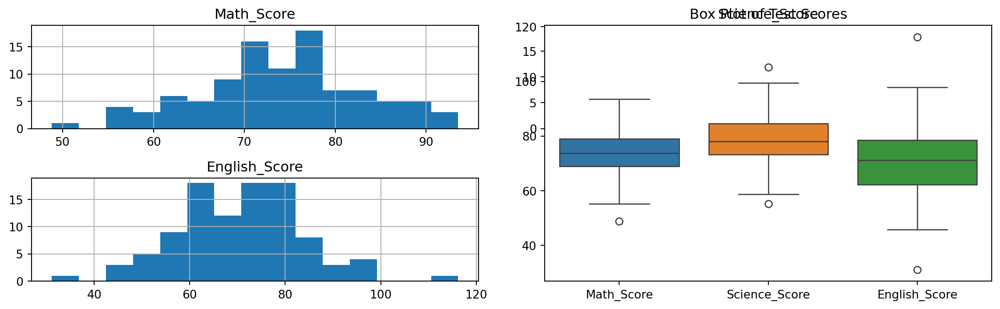
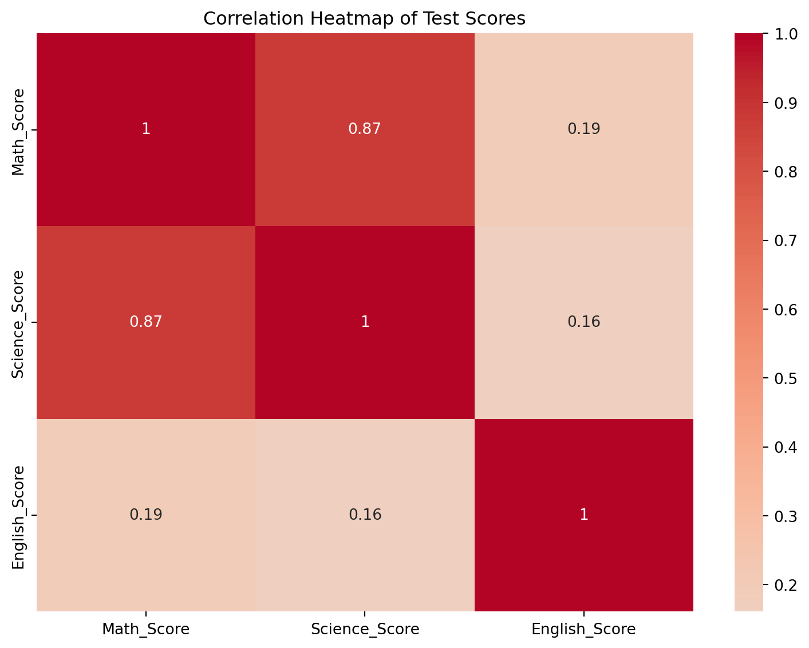

Code
import numpy as np
import pandas as pd
import matplotlib.pyplot as plt
import seaborn as sns
# Set random seed for reproducibility
np.random.seed(42)
# Generate synthetic student test score data
def generate_student_scores(num_students=100):
# Simulate scores for three different subjects
math_scores = np.random.normal(loc=75, scale=10, size=num_students)
science_scores = math_scores + np.random.normal(loc=5, scale=5, size=num_students)
english_scores = np.random.normal(loc=70, scale=12, size=num_students)
# Create a DataFrame
student_data = pd.DataFrame({
'Student_ID': range(1, num_students + 1),
'Math_Score': np.round(math_scores, 2),
'Science_Score': np.round(science_scores, 2),
'English_Score': np.round(english_scores, 2)
})
return student_data
# Generate the synthetic dataset
students_df = generate_student_scores()
# Descriptive Statistics
print("Descriptive Statistics:")
print(students_df.describe())
# Visualization of Score Distributions
plt.figure(figsize=(12, 4))
# Subplot 1: Histogram of Scores
plt.subplot(1, 2, 1)
students_df[['Math_Score', 'Science_Score', 'English_Score']].hist(bins=15, ax=plt.gca())
plt.title('Distribution of Test Scores')
plt.tight_layout()
# Subplot 2: Box Plot of Scores
plt.subplot(1, 2, 2)
sns.boxplot(data=students_df[['Math_Score', 'Science_Score', 'English_Score']])
plt.title('Box Plot of Test Scores')
plt.tight_layout()
plt.show()
# Correlation Analysis
correlation_matrix = students_df[['Math_Score', 'Science_Score', 'English_Score']].corr()
print("\nCorrelation Matrix:")
print(correlation_matrix)
# Correlation Heatmap
plt.figure(figsize=(8, 6))
sns.heatmap(correlation_matrix, annot=True, cmap='coolwarm', center=0)
plt.title('Correlation Heatmap of Test Scores')
plt.tight_layout()
plt.show()Descriptive Statistics:
Student_ID Math_Score Science_Score English_Score
count 100.000000 100.000000 100.000000 100.000000
mean 50.500000 73.961600 79.072900 70.780200
std 29.011492 9.082117 9.664472 13.011703
min 1.000000 48.800000 55.190000 31.100000
25% 25.750000 68.987500 73.195000 62.135000
50% 50.500000 73.730000 78.040000 71.170000
75% 75.250000 79.062500 84.557500 78.457500
max 100.000000 93.520000 105.220000 116.230000/tmp/ipykernel_170946/3181019396.py:38: UserWarning:
To output multiple subplots, the figure containing the passed axes is being cleared.

Correlation Matrix:
Math_Score Science_Score English_Score
Math_Score 1.000000 0.872429 0.190887
Science_Score 0.872429 1.000000 0.161229
English_Score 0.190887 0.161229 1.000000